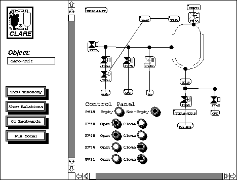

A collaborative project on an environment for the specification, testing, maintenance and automatic generation of application software. The context is batch process control in Chemical Engineering although it is envisaged that the applicability of the environment will be more general. A `domain expert' will be able to specify knowledge about plant subsystems, plant configurations, and the allowable generic operations and constraints on each plant subsystem. An `application engineer' will then use the system to `glue' together predefined operations in order to make specific products. The system will then generate process control code for particular target hardware. Garnet is being used to capture and visualise plant and process information through schematics, process diagrams, interactive simulations and simple animations.
Nikos Drakos, ``Object Orientation and Visual Programming'', in Mamdouh Ibrahim, editor, OOPSLA '92 Workshop on Object-Oriented Programming Languages: The Next Generation, Vancouver, B.C. Canada, October 18 1992. Extended Abstract. pp. 85-93.